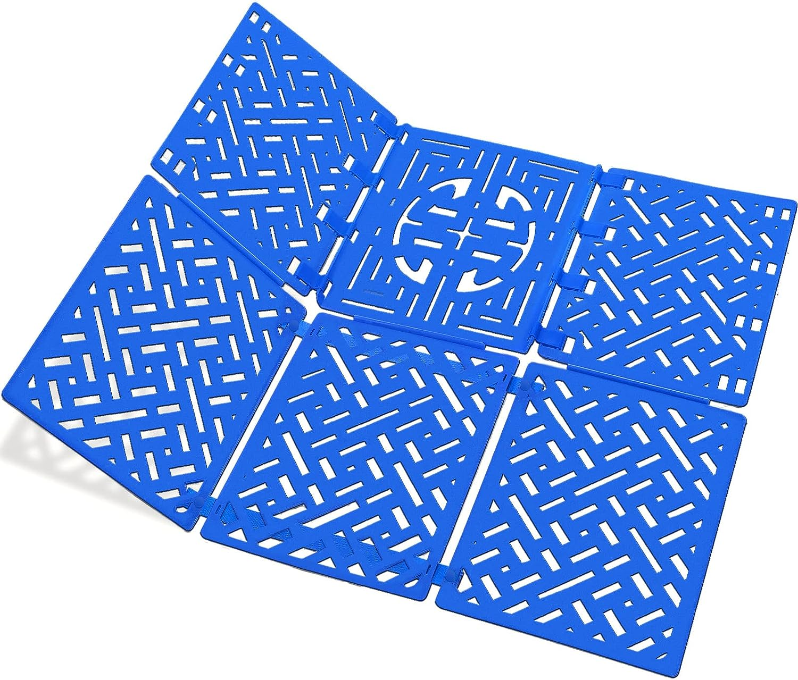

/week one: final project ideation and planning
# motivation
# ---------------------------------
"it is best to present three ideas, but express a clear preference for one." this makes perfect sense to me since proposing only one idea could be bad if that one idea happens to not work out and i would rather not place all my eggs in one basket. on the other hand, proposing too many ideas would make it hard to focus on one and hard to receive feedback on the ideas.
"a good idea has a low threshold for success for also a large potential for scaling up." this also makes sense to me since time is a scarce resource over the course of a semester and working on a project that has an incredibly high baseline for success could be foolish. on the other hand, a good idea is one that has the potential to scale up into something that can be useful in more ways than it was intended to be useful in and to more people than it was intended to be useful to.
"creating something that is useful to you and someone you care about allows you to have sustained motivation to make it work." i am taking this course to learn how to build things that i can use to make my own life and the lives of the people around me better.
# the three ideas
# ---------------------------------
this year, i am living on the 5th floor of pfoho, which means that i have a slanted roof with a skylight instead of a regular window. opening and closing the skylight requires me to stand up on my desk chair due to how high it is. i would like to create a device that allows me to open and close my skylight (and/or its light-blocking blinds and/or its mesh bug screen) using buttons or an app.
i have myopia/nearsightedness and need to wear spectacles to see distant objects. however, i hate wearing glasses for a multitude of reasons. they fog up; i can't wear them while swimming or skiing or doing anything else that requires me to wear protective goggles; they tend to slip off if i'm sweaty from working out; they get wet in the rain and so on. partially as satire and partially for real reasons, i would love to make glasses with little windshield wipers on them that i can turn on and off using a button.
when i am at home in india over the holidays, i often hear complaints from my parents about how much time they spend ironing and folding clothes and how much they dislike it. i imagine that they would love a machine that could recognise (or be told) what kind of clothing a particular item was and then could iron/steam it and fold it.
# the preferred project
# ---------------------------------
of the three ideas i have proposed, i would most want to pursue the third one - a device that can fold clothes by itself. industrialization and mechanization have enabled us to automate a large variety of household chores using appliances like the dishwasher, the roomba, the lawnmower, robots that clean gutters, windows, grills, the list goes on. most commonly, the processes of washing and drying clothing have been automated by the washing machine and the dryer. yet, most people still have to iron/steam and fold their clothes entirely manually. i personally love having ironed and folded clothes since i think they look better - in my closet, in my suitcase, and on me.
# the precedent
# ---------------------------------
when this idea first struck me, i remembered watching the tv show "the big bang theory" and how one of the characters has an interesting contraption that he uses to fold his clothes.

this seemed like an incredibly simple yet effective tool to fold clothes. however, it did not necessarily eliminate the manual labor required to fold clothes. regardless, i think the general structure of the device that i end up making could draw inspiration from sheldon cooper's folding tool.
